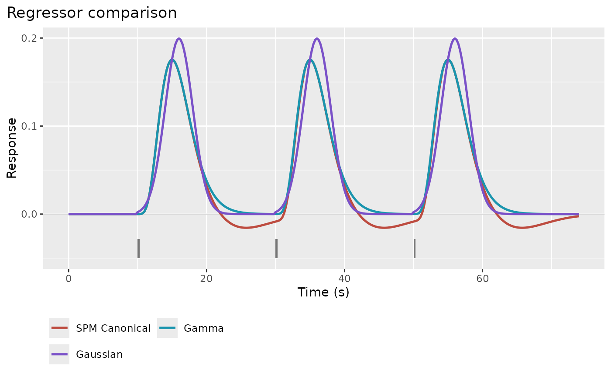
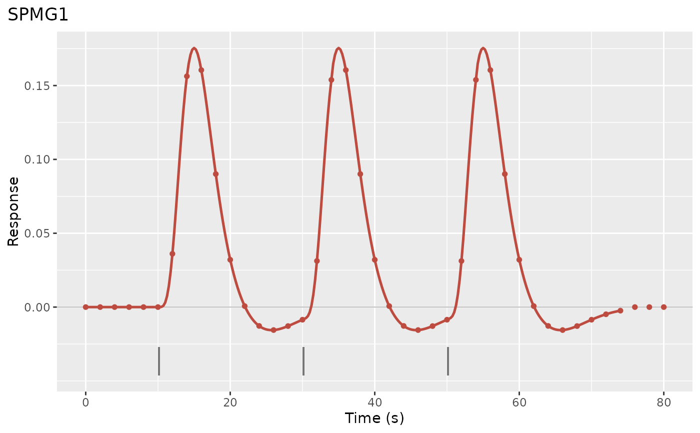
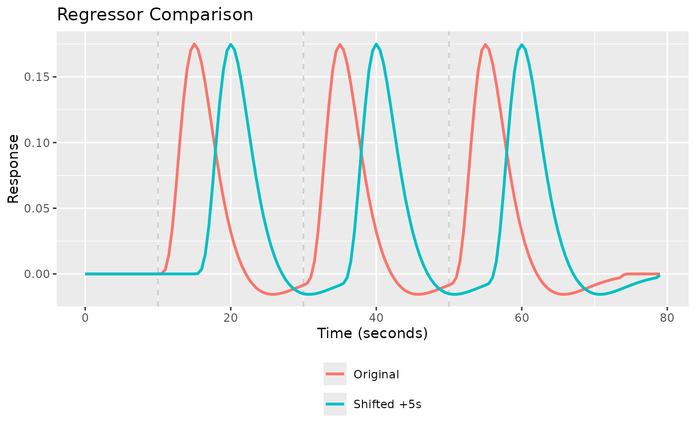
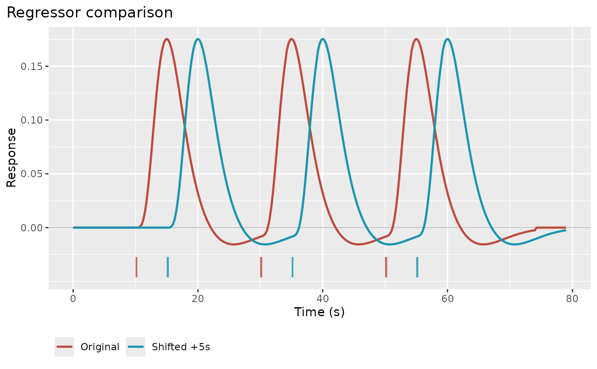

Plots one or more regressors on a shared time axis. Regressors built from a
basis set are expanded into one curve per basis function, and a
regressor_set() is expanded into one curve per condition. Event onsets
(and durations) are drawn as bars under the curves; zero-duration events get
a minimum bar width of 0.4% of the time range so that they stay visible. Uses ggplot2 when
available, otherwise base graphics. Colours come from hrf_palette().
Usage
plot_regressors(
...,
grid = NULL,
labels = NULL,
title = NULL,
subtitle = NULL,
show_onsets = NULL,
onset_alpha = 0.8,
precision = NULL,
use_ggplot = TRUE,
draw = TRUE,
basis = c("all", "first"),
layout = c("overlay", "stack"),
samples = NULL,
palette = c("auto", "categorical", "ordered"),
scales = c("free_y", "fixed")
)Arguments
- ...
Regressor objects (
Reg) or aRegSetto compare. Can be passed as individual arguments or as a named list.- grid
Numeric vector of time points for evaluation. If NULL (default), a 0.25 s grid covering all regressors is used. Use a fine grid for the curve and
samplesto show scan times.- labels
Character vector of labels, one per regressor or one per plotted curve. If NULL (default), uses list names, condition levels, or "Regressor_1", "Regressor_2", etc.
- title
Character string for the plot title. If NULL (default), uses "Regressor comparison".
- subtitle
Character string for the plot subtitle. If NULL, no subtitle.
- show_onsets
Logical or character. If TRUE, mark events for every regressor in its own colour. If "first", mark only the first regressor's events, in grey. If FALSE, hide event marks. If NULL (default), uses "first" for
layout = "overlay"and TRUE forlayout = "stack", so each panel shows its own events.- onset_alpha
Alpha transparency for event marks. Default is 0.8.
- precision
Numeric sampling precision for HRF evaluation. If NULL (default), the grid spacing capped at 0.33 s.
- use_ggplot
Logical; if TRUE and ggplot2 is available, use ggplot2 for plotting. If FALSE, use base R graphics. Default is TRUE.
- draw
Logical; draw the plot (default TRUE). With
use_ggplot = TRUE, set FALSE to customize the returned data frame's"plot"attribute.- basis
Either
"all"(default) to plot every basis column of a multi-basis regressor, or"first"for the first column only.- layout
Either
"overlay"(default) or"stack"(one panel per curve on a shared time axis). Stacked panels mark their own events in grey.- samples
Optional numeric vector of sample times (for example scan acquisition times). The regressors are evaluated there and drawn as points on the curves.
- palette
Colour palette:
"auto"(default),"categorical", or"ordered"; seeplot_hrfs().- scales
For
layout = "stack":"free_y"(default) gives each panel its own y range;"fixed"shares one range so amplitudes can be compared.
Value
A data frame in long format with columns 'time', 'Regressor', and
'response'. With ggplot2, the plot is stored in the "plot" attribute.
The value is invisible except when drawing inside knitr, where it prints
like a ggplot object (see plot_hrfs()).
Details
Inside a knitr document the result is returned visibly and printed by knitr, which lets document themes (for example dark-mode figure twins) handle the ggplot. At the console the plot is drawn immediately and the data are returned invisibly.
Examples
# Create regressors with different HRFs
onsets <- c(10, 30, 50)
reg1 <- regressor(onsets, HRF_SPMG1)
reg2 <- regressor(onsets, HRF_GAMMA)
reg3 <- regressor(onsets, HRF_GAUSSIAN)
# Compare regressors
plot_regressors(reg1, reg2, reg3,
labels = c("SPM Canonical", "Gamma", "Gaussian"))

# Show the scan-time samples of a regressor (TR = 2 s)
plot_regressors(reg1, samples = seq(0, 80, by = 2), labels = "SPMG1")

# One panel per basis function of a basis-set regressor
plot_regressors(regressor(c(10, 40), HRF_SPMG3), layout = "stack")

# Compare original vs shifted regressor
reg_shifted <- shift(reg1, 5)
plot_regressors(reg1, reg_shifted, labels = c("Original", "Shifted +5s"),
show_onsets = TRUE)
